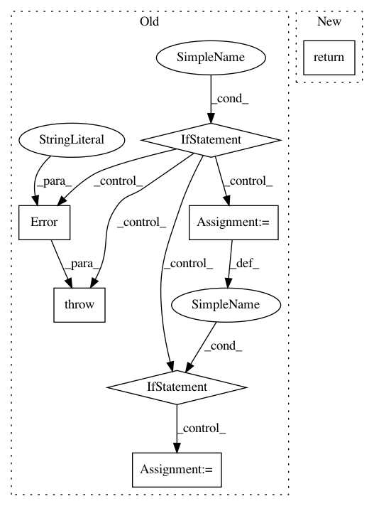

16decb9c0ed4e038ad19a0394d832d56503da9fc,perfkitbenchmarker/network.py,BaseNetwork,GetNetwork,#Any#Any#,111
Before Change
vm: The VM for which the Network is being created.
benchmark_spec = context.GetThreadBenchmarkSpec()
if benchmark_spec is None:
raise errors.Error("GetNetwork called in a thread without a "
"BenchmarkSpec.")
spec = cls._GetNetworkSpecFromVm(vm)
key = cls._GetKeyFromNetworkSpec(spec)
with benchmark_spec.networks_lock:
if key not in benchmark_spec.networks:
benchmark_spec.networks[key] = cls(spec)
return benchmark_spec.networks[key]
def Create(self):
Creates the actual network.
After Change
Args:
vm: The VM for which the Network is being created.
return cls.GetNetworkFromNetworkSpec(cls._GetNetworkSpecFromVm(vm))
@classmethod
def GetNetworkFromNetworkSpec(cls, spec):
Returns a BaseNetwork.
In pattern: SUPERPATTERN
Frequency: 3
Non-data size: 7
Instances
Project Name: GoogleCloudPlatform/PerfKitBenchmarker
Commit Name: 16decb9c0ed4e038ad19a0394d832d56503da9fc
Time: 2018-05-02
Author: chriswilkes@google.com
File Name: perfkitbenchmarker/network.py
Class Name: BaseNetwork
Method Name: GetNetwork
Project Name: GoogleCloudPlatform/PerfKitBenchmarker
Commit Name: eb687adc7f6451c9c5fa8a474af6ba759ab4fea2
Time: 2016-02-15
Author: carlos.torres@rackspace.com
File Name: perfkitbenchmarker/providers/rackspace/rackspace_virtual_machine.py
Class Name: RackspaceVirtualMachine
Method Name: _GetBootDevice
Project Name: GoogleCloudPlatform/PerfKitBenchmarker
Commit Name: a084724c61faa05a57319cf1bc362a9d2b56ffc5
Time: 2018-05-02
Author: chriswilkes@google.com
File Name: perfkitbenchmarker/network.py
Class Name: BaseNetwork
Method Name: GetNetwork